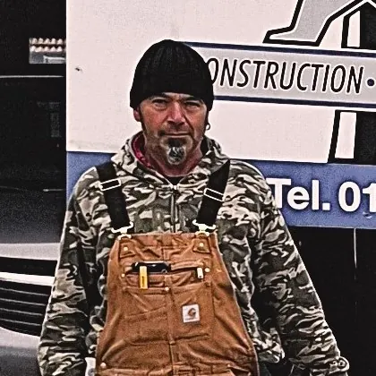

Ein Meister, ein Betrieb, seit 1994.W&W Bau GmbH · Epfach bei Denklingen
Norbert Wiesenbach hat die W&W Bau GmbH gegründet und führt sie bis heute — vom Rohbau bis zur Denkmalsanierung.
Der Werdegang.
- MaurerlehreDer Anfang: die Lehre im Maurerhandwerk, danach Vorarbeiter in mehreren Hochbauunternehmen.
- 1992MeisterprüfungNorbert Wiesenbach meldet sich zur Meisterprüfung an — und besteht. Der Schritt in die Selbstständigkeit.
- 1994W&W Bau GmbHAus dem eigenen Bauunternehmen wird die GmbH. Schwerpunkt: Hochbau und Altbausanierung, zeitweise mit fünfzehn Angestellten.
- Florida & KalifornienZwischendurch führt der Weg ins Ausland: Immobilienprojekte in den USA, die den Erfahrungsschatz erweitern.
- heuteEpfach bei DenklingenZahlreiche Projekte später: Sitz in Epfach, Baustellen zwischen Landsberg, Ammersee und Schongau.

Vier Sätze, an die wir uns halten.
Im Lot und in der Flucht
Ein Maurermeister misst, bevor er mauert. Was schief anfängt, wird nie gerade — deshalb beginnt jede Baustelle mit der Schnur.
Erhalten, was gut ist
Altbau und Denkmal sind unser Herz. Wir reißen nicht ab, was noch trägt — wir bringen es in Ordnung.
Ehrlich beim Termin
Wenn es sechs Wochen dauert, sagen wir sechs Wochen. Eine zugesagte Woche zu wenig hilft niemandem.
Ein Ansprechpartner
Vom Ortstermin bis zur Abnahme reden Sie mit demselben Menschen — auch wenn Partnerbetriebe mitarbeiten.
- 1994W&W Bau GmbH gegründet
- 1992Meisterprüfung
- 15Mitarbeiter zu Spitzenzeiten
- 7Leistungsbereiche
Die Leute, die das machen.
Ein kleiner Betrieb, feste Partner, ein Ansprechpartner — hier steht, wer bei Ihnen vor der Tür steht. Weitere Fotos ergänzen wir gemeinsam.

Norbert WiesenbachGeschäftsführer, MaurermeisterSeit 1992 Meister, seit 1994 Chef — und auf jeder Baustelle selbst dabei.
Termine, Rechnungen, Rückrufe. Wer im Büro anruft, hat sie am Telefon.
Auf den Baustellen von W&W mit dabei.
Wir suchen Verstärkung — die Stelle steht unter Jobs.
Mit denen wir seit Jahren bauen.
Baustoffe, Gerüst, Sanitär, Elektro, Fliesen, Dach: Ein Bau braucht mehr als einen Betrieb. Wir arbeiten mit festen Partnern aus der Region — Sie bekommen ein Ergebnis, keine Liste von Firmen.
Vom Sitz aus gespannt: Landsberg, Ammersee, Schongau.
Unser Sitz ist Epfach an der B17 zwischen Landsberg und Schongau. Die Schnüre zeigen die Luftlinie — in einer halben Stunde sind wir auf jeder Baustelle im Landkreis. Wer weiter weg wohnt, darf trotzdem fragen.
Ringe: 15 und 30 km um Epfach · Prinzipdarstellung
Lernen Sie uns kennen.
Am einfachsten am Telefon. Sagen Sie, worum es geht — wir sagen, ob wir der richtige Betrieb dafür sind:
- Anruf oder NachrichtSie sagen, was ansteht — am Telefon oder über das Formular.
- OrtsterminWir kommen vorbei, messen und schauen uns den Bestand an. Kostenlos.
- Klares AngebotEin Preis, ein Zeitplan, ein Ansprechpartner — dann geht es los.